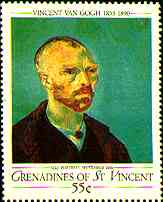

|
Gogh, Vincent Willem
van, Dutch Post-Impressionist painter, whose work represents
the archetype of Expressionism, or emotional spontaneity in painting. |

 |
In 1888 van Gogh left Paris
for southern France, where, under the burning sun of Province, he painted scenes of the
fields, cypress trees, peasants, and rustic life characteristic of the region. For a time he was in a hospital at Arles. He then spent a year in the nearby asylum of Saint-Rémy, working between repeated spells of madness. He shot himself on July 27, 1890, and died two days later. The Rijksmuseum Vincent van Gogh, containing over 1,000 paintings, sketches, and letters, was opened in Amsterdam in 1973. Source: Microsoft Encarta 1996. |